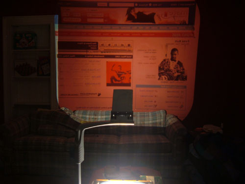
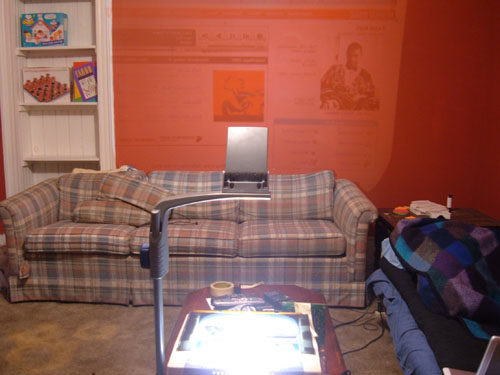
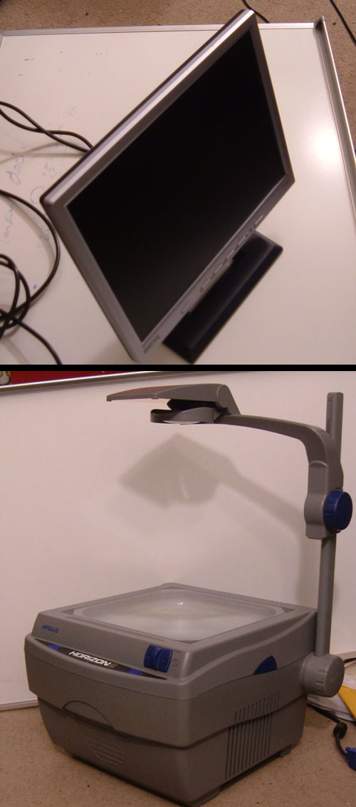
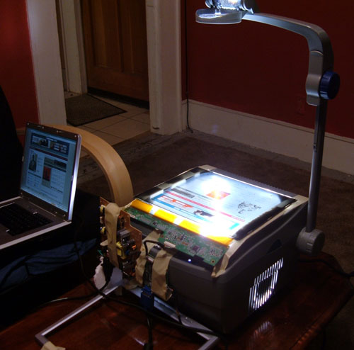
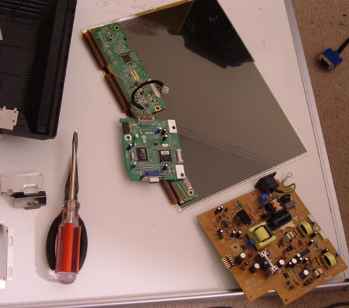
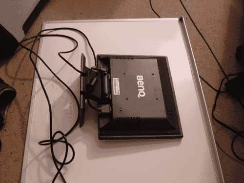
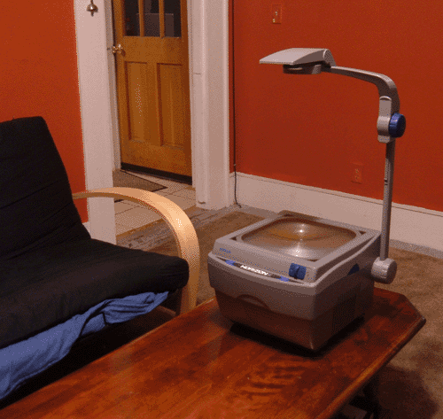

An inexpensive home theatre. This small project came into life when I realised my TV is too small for XXI century. I could afford big TV, but I thought it's still too expensive. After looking at a bigger picture, I realised that I watch a lot of TV from my computer (eg. russiantvonline.com, video.google.com, russianny.com/newdesign/TV and other video-on-demand websites.) This is where idea of making TV from a computer came into life.
Thus, I didn't need a whole lot of parts. I already had a couple of computers. All I needed was (1)an LCD screen to capture an 'image' from computer and (2)a way to project a picture on the wall.
Ingredients:
1. Benq 15" LCD monitor. Purchased from Daystar Computer Services for $150.
2. Apollo Overhead Projector. Purchased from ebay.com for $36.02.
____________________________________
Total: $186.02 (round up to $200)
Q: One might ask "Why bother if you could purchase an LCD projector?"
A: The answer is price. LCD projector costs from $700. My home made one costs $200 + few hours of my labour.
Q: Why does projected picture have too much redness in it?
A: Because the wall in my living room is red. Obviously you will want to project on plain white wall, write board, etc.
Q: How much heat does LCD get?
A: Good question. There's a lot of heat attacking LCD now, enough to damage it. I am working on a cooling fan that will be permanently fabricated to the box.

Projecting computer output on the wall in my living room, lights turned off.

Projecting computer output on the wall in my living room, lights turned on.

All I needed for the project was an LCD monitor and an Overhead Projector, these are the core main components.

The principle of operation is pretty simple. You get a signal from your computer to a stripped LCD, then with the help of an overhead projector, you project that on the wall, through projector's mirror.

This is what LCD monitor looks like before you are ready to mount it to an overhead projector.

Taking LCD monitor apart.

First test-drive of a $200 home theatre.